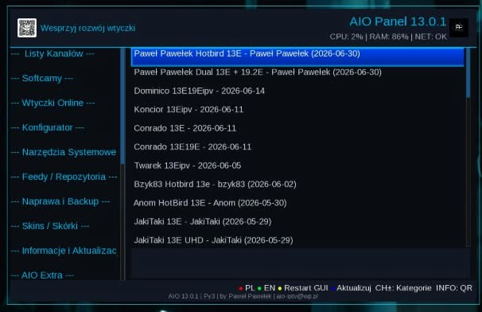
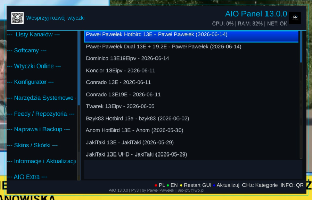
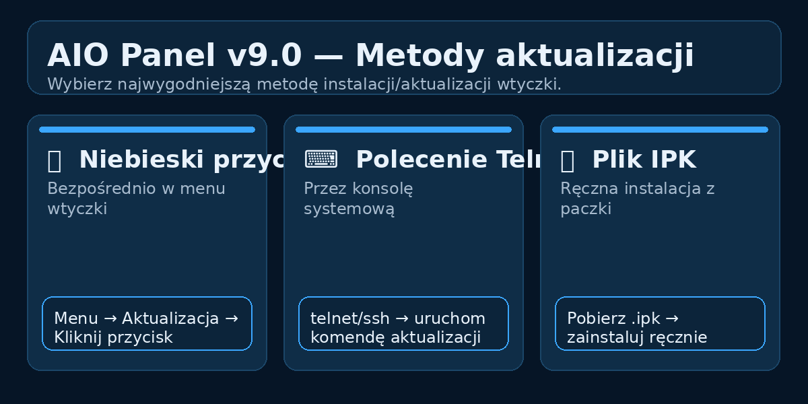

Witam na mojej stronie Paweł Pawełek
Panel główny • aktualizacja 13.0.1
AIO Panel 13.0.1
Aktualizacja AIO Panel 13.0.1 dla Enigma2. W tej wersji główny nacisk został położony na dodanie instalatora PP Channel Sync oraz odświeżenie danych oscam.dvbapi Poland.

Do czego służy
AIO Panel to panel narzędziowy dla Enigma2. Pozwala z jednego miejsca uruchamiać instalatory wtyczek, list kanałów, softcamów, piconów, skór, narzędzi systemowych oraz funkcji naprawy i aktualizacji.
Wydanie 13.0.1 jest aktualizacją funkcjonalną: dodaje PP Channel Sync, aktualizuje bazę oscam.dvbapi Poland, poprawia instalator Fury FHD oraz usuwa z menu niepotrzebną pozycję.
Plik: enigma2-plugin-extensions-panelaio_13.0.1_all.ipk 206.4 KB
Najważniejsze zmiany w 13.0.1
- dodano instalator PP Channel Sync bezpośrednio z poziomu AIO Panel
- zaktualizowano dane oscam.dvbapi Poland w zakładce Softcamy
- poprawiono polecenie instalatora skina Fury FHD
- usunięto z menu pozycję Czyszczenie niedziałających wtyczek
- pozostałe funkcje AIO Panel pozostają bez zmian
Changelog 13.0.1
PP Channel Sync
- dodano nową pozycję instalatora PP Channel Sync
- instalacja odbywa się z poziomu AIO Panel, bez ręcznego wpisywania komend w terminalu
- wtyczka pomaga przy pracy z listami kanałów oraz ich synchronizacją
- instalator korzysta z polecenia:
wget -q -O - https://raw.githubusercontent.com/OliOli2013/PPChannelSync-Plugin/main/installer.sh | /bin/sh
oscam.dvbapi Poland
- podmieniono i odświeżono bazę
oscam.dvbapidla polskich platform - funkcja dostępna jest w zakładce Softcamy
- przeznaczona jest dla użytkowników OSCam, którzy chcą szybko uzupełnić lub zaktualizować wpisy dla Polski
Skin Fury FHD
- zaktualizowano źródło instalatora Fury FHD
- nowe polecenie:
wget -q "--no-check-certificate" https://raw.githubusercontent.com/islam-2412/IPKS/refs/heads/main/fury/installer.sh -O - | /bin/sh
Porządki w menu
- usunięto funkcję Czyszczenie niedziałających wtyczek
- reszta funkcji, układ panelu i dotychczasowe narzędzia zostają bez zmian
- po aktualizacji zalecany jest ręczny Restart GUI
Zdjęcia / podgląd


Aktualizacja i instalacja
Aktualizacja dostępna jest bezpośrednio z poziomu wtyczki AIO Panel. Wejdź w AIO Panel, użyj opcji aktualizacji, a po zakończeniu wykonaj ręczny Restart GUI.
wget -q -O - https://raw.githubusercontent.com/OliOli2013/PanelAIO-Plugin/main/installer.sh | /bin/shDomyślna komenda dla użytkownika.
wget -q -O - --user-agent="Enigma2" -4 https://raw.githubusercontent.com/OliOli2013/PanelAIO-Plugin/main/installer.sh | /bin/shUżyj tylko wtedy, gdy zwykłe pobieranie z GitHuba nie działa.
Instalacja pobranego IPK przez FTP
Jeśli pobierasz paczkę ręcznie: wgraj plik IPK do katalogu /tmp, a potem wykonaj instalację w terminalu.
opkg install /tmp/enigma2-plugin-extensions-panelaio_13.0.1_all.ipk